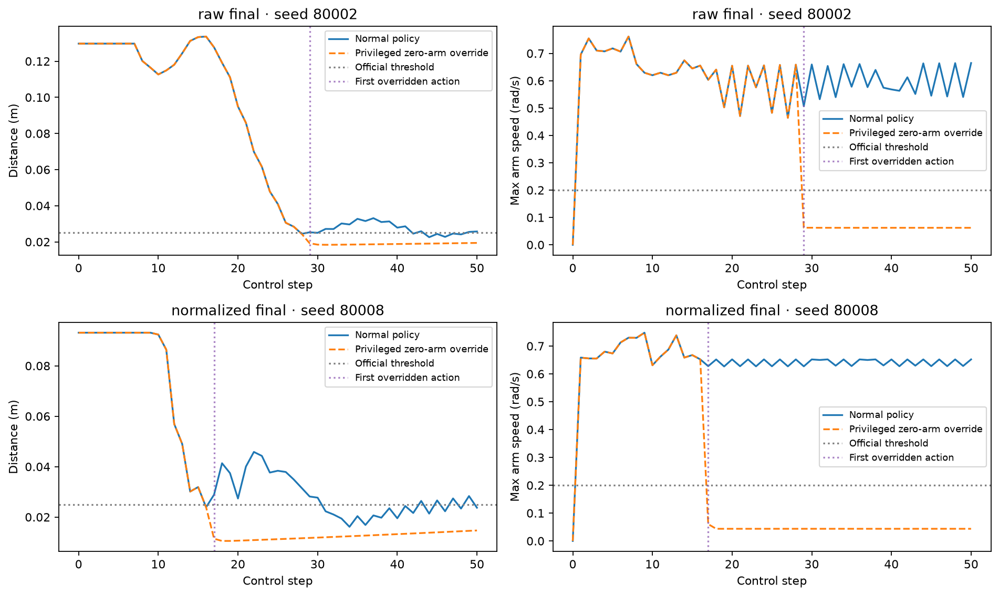

Stage 1 · validation-only diagnostic
What happens if a privileged override stops commanding arm increments after placement?
This is not repaired PPO or a final test result. The override reads privileged task placement and changes the original policy command. All numbers below are conditional diagnostic outcomes on the same ten validation seeds. No model was trained or selected here.
Raw PPO: 2/10 episodes activated; 2/10 official successes at any time under intervention; Normalized PPO: 1/10 episodes activated; 1/10 official successes at any time under intervention.
Predeclared comparison
Raw final and observation-normalized final checkpoints, each normal and overridden, on seeds 80000–80009. Each episode runs all 50 steps. Placement at step t latches zero arm increments from action t+1 onward; the current policy still supplies the gripper command every step. No forced placement, goal-local reset, added damping or changed reward.
For normal conditions the override activation columns are zero by definition. Official success still requires distance ≤0.025 m and all seven arm speeds ≤0.2 rad/s. Reaching placement alone does not meet that criterion.
Zero delta recomputes a measured-state target
The installed Panda controller uses delta mode with use_target=False. Its normalized ±1 arm command maps to ±0.1 rad. Each step sets target = current measured joint position + increment. Sending zero therefore recomputes the measured pose each step; it does not retain a fixed pose from activation or guarantee that velocity vanishes. The log records the actual target and measured pre-step positions, and checks their equality on every active step.

Trace examples use the first naturally activated validation seed per policy (or the first seed when none activate). The aggregate table includes all ten seeds. Trace selection does not depend on success.
Illustrative activation cases
These additional examples were chosen after the aggregate diagnostic: the first naturally activated validation seed per policy, matching the trace plots. They are selected examples, not a performance sample. All recorded fields match the original episodes; aggregate counts above are unchanged.
raw_final: first natural activation
seed 80002, normal; 0 overridden stepsseed 80002, override; 22 overridden stepsnormalized_final: first natural activation
seed 80008, normal; 0 overridden stepsseed 80008, override; 34 overridden stepsExample selection and video provenance
Predeclared native simulator videos
The first two predeclared validation seeds for every condition, regardless of activation or success. If an override never activates, paired behavior is expected to be identical. Every video rerun reproduced its entire logged trajectory exactly.
raw final · seed 80000
normal: 0 overridden steps; official final success Falseoverride: 0 overridden steps; official final success Falseraw final · seed 80001
normal: 0 overridden steps; official final success Falseoverride: 0 overridden steps; official final success Falsenormalized final · seed 80000
normal: 0 overridden steps; official final success Falseoverride: 0 overridden steps; official final success Falsenormalized final · seed 80001
normal: 0 overridden steps; official final success Falseoverride: 0 overridden steps; official final success False
Limits and reproducibility
The ordinary policies reproduced all 500 pre-clip action means from the earlier validation saturation audit exactly. Frozen normalization statistics did not change. The protocol was saved before rollouts with checkpoint, source and installed controller hashes. Final test seeds remained untouched. A few naturally activated episodes cannot establish robust stopping, and any intervention success belongs to the privileged diagnostic rather than autonomous PPO.
Predeclared protocol · Aggregate outcomes · Earlier baseline equality · Raw override step log · Normalized override step log · Trace selection